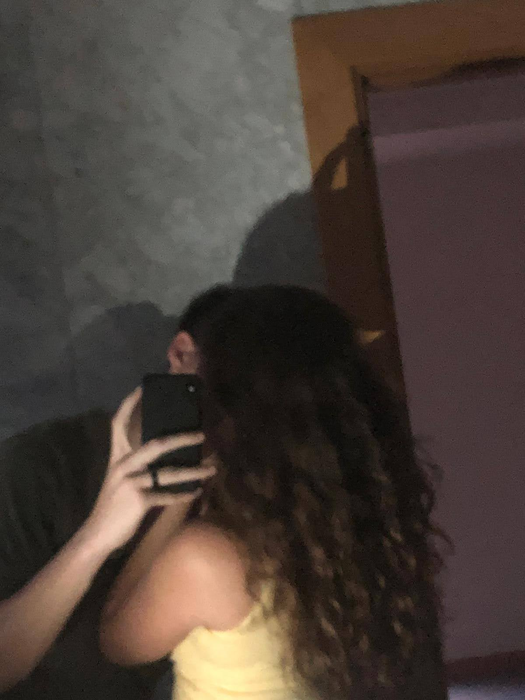
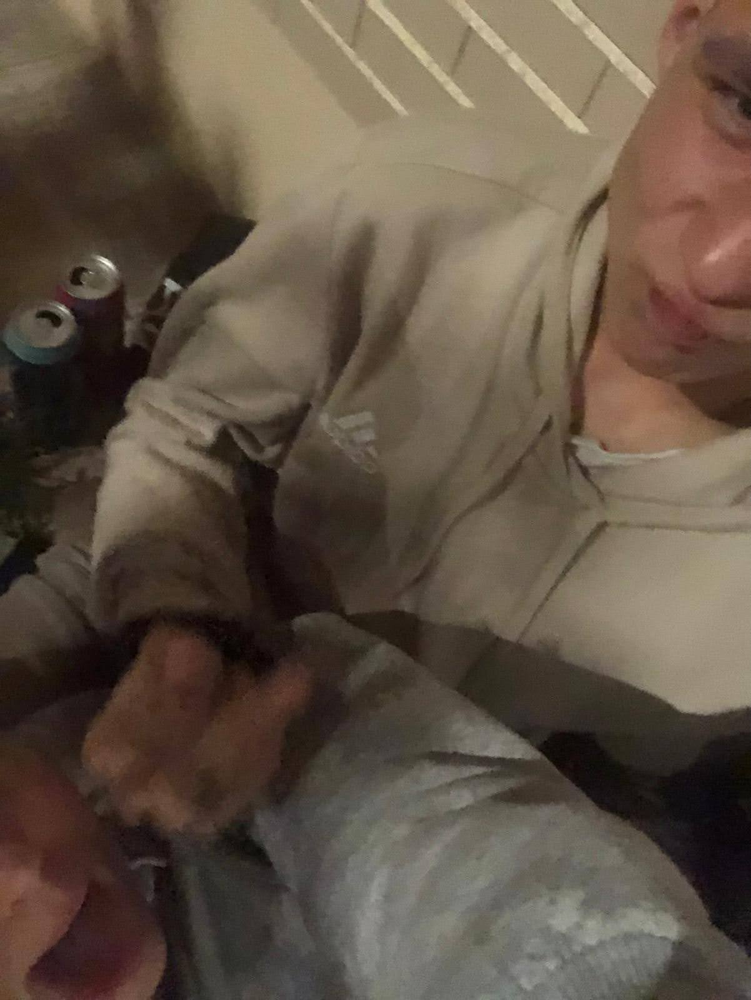
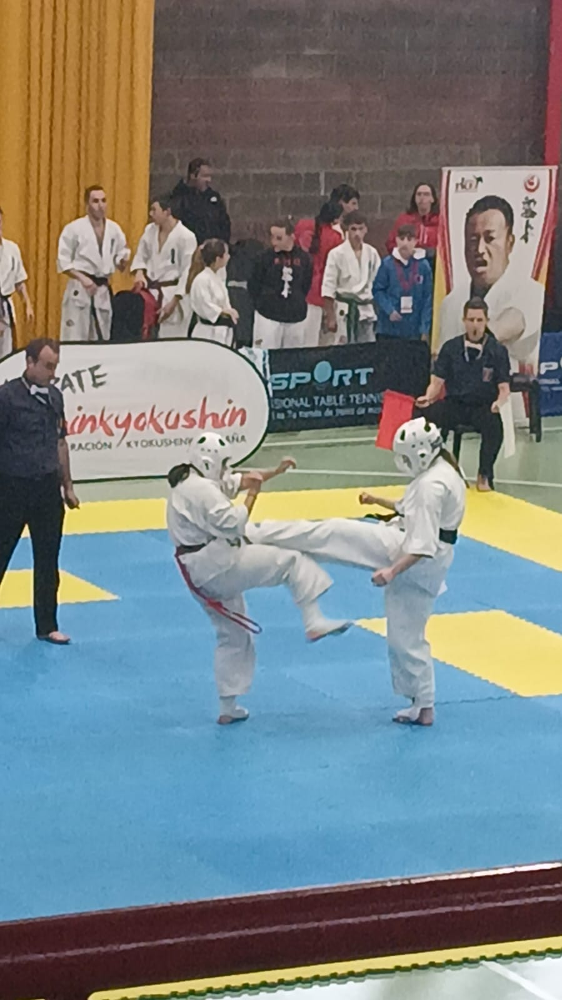
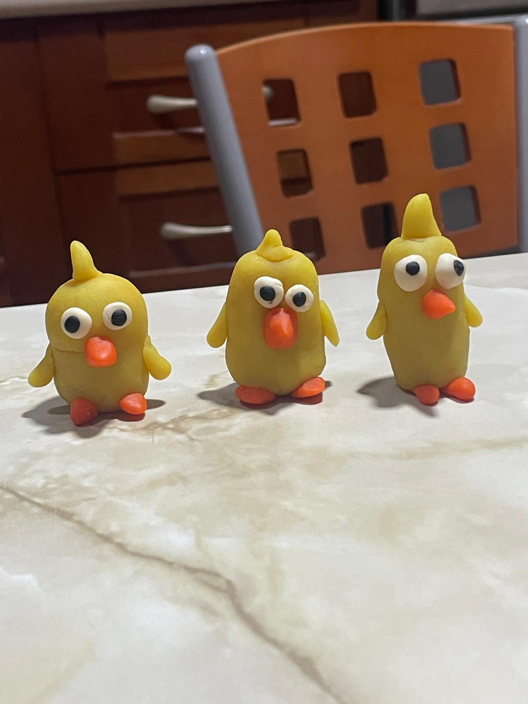
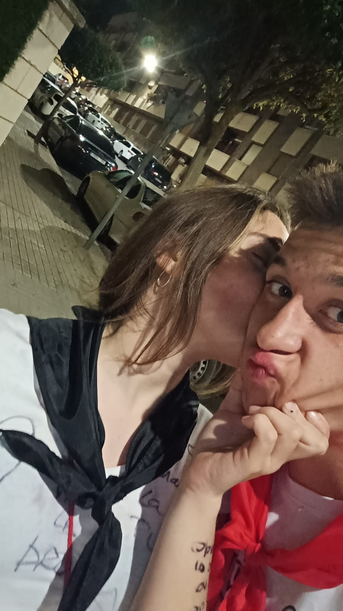

La primera vez que fuimos solos al hotel (me da buenísimos recuerdos, quiero volver jajajaj)

Una de nuestras primeras fotos juntos!

Primera vez que vamos juntos al cine, uno de mis mejores días

La primera vez que te vi en un torneo amor!

Nuestros pollitos jajajaj histórico

San Isidro! Inolvidable, contigo me dan ganas de todo

Todos son recuerdos que hemos tenido juntos, pero nos quedan muchas cosas por vivir juntos y el museo, aún no va a terminar...